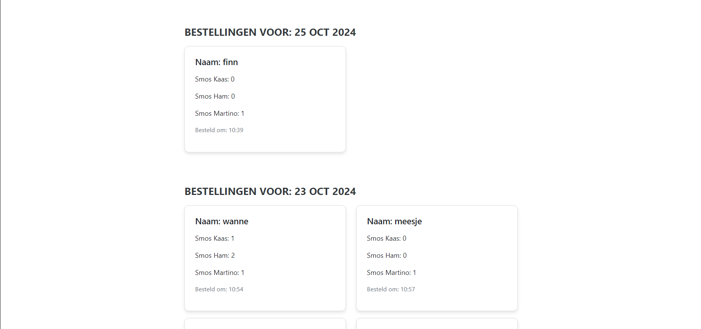

De 2for1 Broodjeszaak was oorspronkelijk een bedrijf waarbij klanten via WhatsApp hun broodjes bestelden. Om de klantbeleving te verbeteren en het bestelproces te vereenvoudigen, hebben we besloten om een online bestelsysteem te ontwikkelen. Klanten kunnen nu gemakkelijk broodjes bestellen via een gebruiksvriendelijke website.
Inleiding

Login Pagina: Klanten loggen in om hun bestellingen te plaatsen.

Admin Pagina: Bestellingen worden hier gelaten zien voor 2for1.

Bestel Pagina: Klanten stellen hun broodjes samen voor de bestelling.
Probleemstelling
Hoe kunnen we het oorspronkelijke bestelsysteem, dat via WhatsApp verliep, verbeteren? Het huidige systeem is ongestructureerd en inefficiënt, waarbij klanten hun bestellingen handmatig doorgeven. Dit zorgt voor rommelige en onduidelijke communicatie, wat leidt tot vertragingen, miscommunicatie en ontevreden klanten. Hoe kunnen we deze uitdagingen aanpakken om het bestelproces te stroomlijnen en de klanttevredenheid te verhogen?
Plan van Aanpak
We hebben besloten om een online bestelsysteem te ontwikkelen waarmee klanten hun broodjes kunnen bestellen, betalingen kunnen doen bij het profiel en hun bestellingen makkelijker aan komt bij 2for1. Het systeem is opgebouwd met een gebruikersvriendelijke interface en maakt gebruik van een database om bestellingen efficiënt bij te houden die deze dan laat zien op een admin page.
Realisatie
Het systeem werd gerealiseerd met HTML, CSS, JavaScript en PHP. Klanten kunnen zich aanmelden, hun bestellingen samenstellen en versturen. Daarnaast is er een backend ontwikkeld waarmee de broodjeszaak bestellingen kan beheren en opvolgen. Klanten kunnen hun bestellingen in contanten betalen bij de afhaling.
Besluit
Door de implementatie van het online bestelsysteem is de klanttevredenheid verbeterd en de workflow in de broodjeszaak geoptimaliseerd. Het systeem is eenvoudig te gebruiken en heeft het bestelproces aanzienlijk versneld. Dit systeem zorgt er ook voor dat er geen fouten kunnen gemaakt worden bij het bestellen want eerst werden er soms broodjes besteld en niemand kwam ze ophalen.
Link naar Documentatie
Voor gedetailleerde documentatie over het project kun je de GitHub-repository van het project bekijken:
Bekijk de Documentatie op GitHub